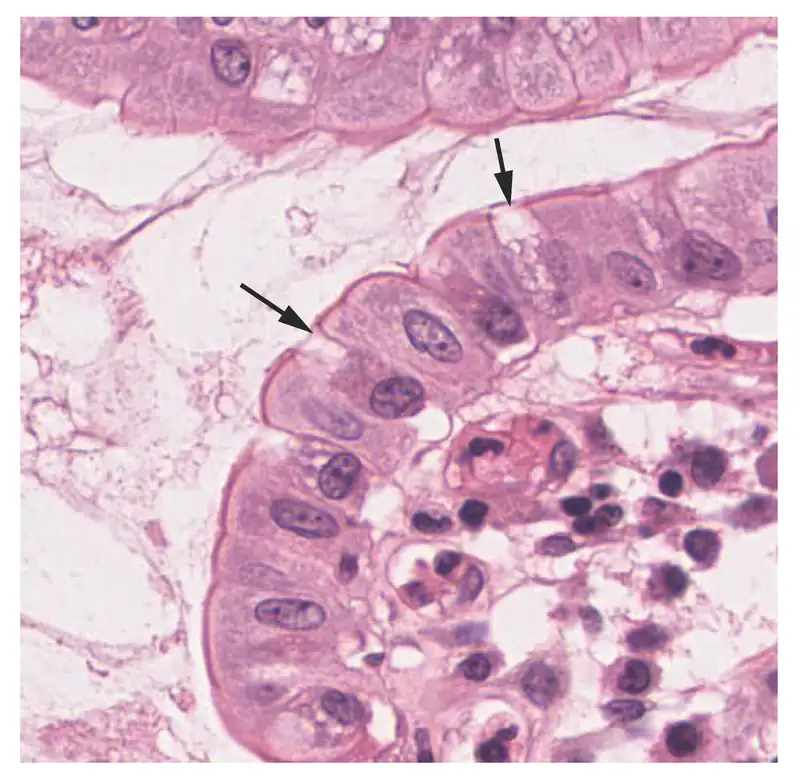
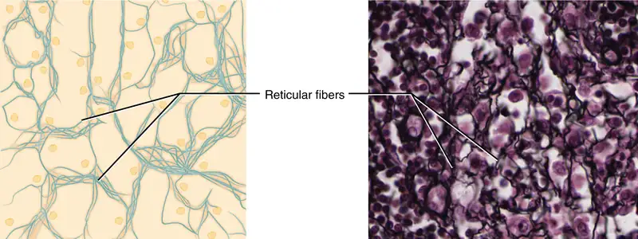
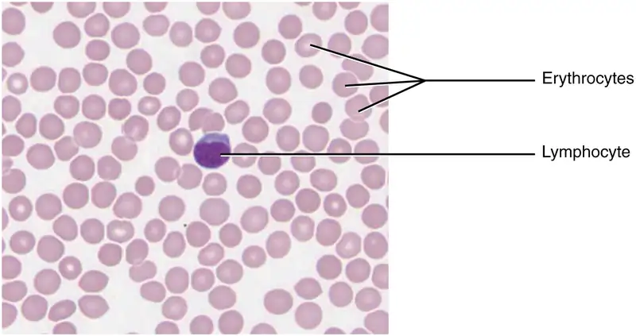

Chapter 4: The Tissue Level of Organization¶
Introduction¶
![This micrograph shows tissue surrounding several empty spaces. The epithelial tissue occurs at the border between the rest of the tissue and the empty spaces. The normal epithelium is composed of rectangular-shaped cells neatly organized side by side. Dark purple nuclei are clear at the bottom of the epithelial cells, where they attach to the rest of the tissue. The abnormal epithelium appears as a tangled area of purple nuclei, much thicker than the normal epithelium although no distinct cells are discernible.](img/400-micrograph-of-cervical-tissue-updated.webp)
Chapter Outline: Chapter Objectives
After studying this chapter, you will be able to:
- Identify the main tissue types and discuss their roles in the human body
- Identify the four types of tissue membranes and the characteristics of each that make them functional
- Explain the functions of various epithelial tissues and how their forms enable their functions
- Explain the functions of various connective tissues and how their forms enable their functions
- Describe the characteristics of muscle tissue and how these enable function
- Discuss the characteristics of nervous tissue and how these enable information processing and control of muscular and glandular activities
The body contains at least 200 distinct cell types. These cells contain essentially the same internal structures yet they vary enormously in shape and function. The different types of cells are not randomly distributed throughout the body; rather they occur in organized layers, a level of organization referred to as tissue. The micrograph that opens this chapter shows the high degree of organization among different types of cells in the tissue of the cervix. You can also see how that organization breaks down when cancer takes over the regular mitotic functioning of a cell.
The variety in shape reflects the many different roles that cells fulfill in your body. The human body starts as a single cell at fertilization. As this fertilized egg divides, it gives rise to trillions of cells, each built from the same blueprint, but organizing into tissues and becoming irreversibly committed to a developmental pathway.
4.1 Types of Tissues¶
Learning Objectives
By the end of this section, you will be able to:
- Identify the four main tissue types
- Discuss the functions of each tissue type
- Relate the structure of each tissue type to their function
- Discuss the embryonic origin of tissue
- Identify the three major germ layers
- Identify the main types of tissue membranes
The term tissue is used to describe a group of cells found together in the body. The cells within a tissue share a common embryonic origin. Microscopic observation reveals that the cells in a tissue share morphological features and are arranged in an orderly pattern that achieves the tissue’s functions. From the evolutionary perspective, tissues appear in more complex organisms. For example, multicellular protists, ancient eukaryotes, do not have cells organized into tissues.
Although there are many types of cells in the human body, they are organized into four broad categories of tissues: epithelial, connective, muscle, and nervous. Each of these categories is characterized by specific functions that contribute to the overall health and maintenance of the body. A disruption of the structure is a sign of injury or disease. Such changes can be detected through histology, the microscopic study of tissue appearance, organization, and function.
The Four Types of Tissues¶
Epithelial tissue, also referred to as epithelium, refers to the sheets of cells that cover exterior surfaces of the body, line internal cavities and passageways, and form certain glands. Connective tissue, as its name implies, binds the cells and organs of the body together and functions in the protection, support, and integration of all parts of the body. Muscle tissue is excitable, responding to stimulation and contracting to provide movement, and occurs as three major types: skeletal (voluntary) muscle, smooth muscle, and cardiac muscle in the heart. Nervous tissue is also excitable, allowing the propagation of electrochemical signals in the form of nerve impulses that communicate between different regions of the body (Figure 4.2).
The next level of organization is the organ, where several types of tissues come together to form a working unit. Just as knowing the structure and function of cells helps you in your study of tissues, knowledge of tissues will help you understand how organs function. The epithelial and connective tissues are discussed in detail in this chapter. Muscle and nervous tissues will be discussed only briefly in this chapter.
![This diagram shows the silhouette of a female surrounded by four micrographs of tissue. Each micrograph has arrows pointing to the organs where that tissue is found. The upper left micrograph shows nervous tissue that is whitish with several large, purple, irregularly-shaped neurons embedded throughout. Nervous tissue is found in the brain, spinal cord and nerves. The upper right micrograph shows muscle tissue that is red with elongated cells and prominent, purple nuclei. Cardiac muscle is found in the heart. Smooth muscle is found in muscular internal organs, such as the stomach. Skeletal muscle is found in parts that are moved voluntarily, such as the arms. The lower left micrograph shows epithelial tissue. This tissue is purple with many round, purple cells with dark purple nuclei. Epithelial tissue is found in the lining of GI tract organs and other hollow organs such as the small intestine. Epithelial tissue also composes the outer layer of the skin, known as the epidermis. Finally, the lower right micrograph shows connective tissue, which is composed of very loosely packed purple cells and fibers. There are large open spaces between clumps of cells and fibers. Connective tissue is found in the leg within fat and other soft padding tissue as well as bones and tendons.](img/401-types-of-tissue.webp)
Embryonic Origin of Tissues¶
The zygote, or fertilized egg, is a single cell formed by the fusion of an egg and sperm. After fertilization the zygote gives rise to rapid mitotic cycles, generating many cells to form the embryo. The first embryonic cells generated have the ability to differentiate into any type of cell in the body and, as such, are called totipotent, meaning each has the capacity to divide, differentiate, and develop into a new organism. As cell proliferation progresses, three major cell lineages are established within the embryo. As explained in a later chapter, each of these lineages of embryonic cells forms the distinct germ layers from which all the tissues and organs of the human body eventually form. Each germ layer is identified by its relative position: ectoderm (ecto- = “outer”), mesoderm (meso- = “middle”), and endoderm (endo- = “inner”). Figure 4.3 shows the types of tissues and organs associated with each of the three germ layers. Note that epithelial tissue originates in all three layers, whereas nervous tissue derives primarily from the ectoderm and muscle tissue from mesoderm.
![This is a two column-table containing both text and illustrations. The left column is titled germ layer while the right column is titled “Gives rise to.” The germ layer in the first row is ectoderm. Ectoderm gives rise to epidermis, glands on the skin, some cranial bones, the pituitary and adrenal medulla, the nervous system, the tissue between the cheeks and gums, and the anus. This row contains three pictures. The leftmost picture illustrates several layers of yellow, oval-shaped skin cells with purple nuclei. The middle diagram shows a neuron, which is a yellow, star shaped cell with finger like branches at its corners. The neuron also has a purple nucleus and a yellow tube that connects to the bottom of the cell. The right image in this row shows a brown pigment cell embedded at the bottom layer of several skin cells. It is secreting dark-colored pigment into the skin cells from tentacle-like projections. The germ layer in the second row is mesoderm. Mesoderm gives rise to connective tissues, bone, cartilage, blood, the endothelium of blood vessels, muscle, synovial membranes, serous membranes that line body cavities, the kidneys, and the lining of the gonads. Five images are given in this row to illustrate. The leftmost image is cardiac muscle, which is cylindrical and curved. There are many open spaces between neighboring cardiac muscles. The next image shows skeletal muscle, which is a series of closely stacked cylinders with well defined horizontal striping. The middle image shows three tubule cells of the kidney, which are square shaped and contain a brown nucleus. The fourth image shows a series of red blood cells, which are red and saucer shaped with a slight depression at the center. The fifth image shows smooth muscles which are tightly packed, diamond shaped cells with oval-shaped nuclei. Endoderm gives rise to the lining of the airways and digestive system (except the mouth and distal part of digestive system). Also, the rectum and anal canal, digestive glands, endocrine glands, and adrenal cortex all develop from endoderm. The leftmost image in this row shows a lung cell, which is a large, purple, trapezoid-shaped cell. The middle image shows a pair of thyroid cells, which are rectangle-shaped with the upper edge of each cell having a row of finger like projections, similar in appearance to carpet. The rightmost image in this row shows a pancreatic cell, which is large and wedge-shaped. The pancreatic cell has small indentations throughout its cell membrane.](img/419-420-421-table-04-01-updated.webp)
Interactive
Explore this genetics website to learn more about stem cells. How do somatic stem cells differ from embryonic stem cells?
Tissue Membranes¶
A tissue membrane is a thin layer or sheet of cells that covers the outside of the body (for example, skin), the organs (for example, pericardium), internal passageways that lead to the exterior of the body (for example, mucosa of stomach), and the lining of the moveable joint cavities. There are two basic types of tissue membranes: connective tissue and epithelial membranes (Figure 4.4).
![This illustrations shows the silhouette of a human female from an anterior view. Several organs are showing in her neck, thorax, abdomen left arm and right leg. Text boxes point out and describe the mucous membranes in several different organs. The topmost box points to the mouth and trachea. It states that mucous membranes line the digestive, respiratory, urinary and reproductive tracts. They are coated with the secretions of mucous glands. The second box points to the outside edge of the lungs as well as the large intestine and states that serous membranes line body cavities that are closed to the exterior of the body, including the peritoneal, pleural and pericardial cavities. The third box points to the skin of the hand. It states that cutaneous membrane, also known as the skin, covers the body surface. The fourth box points to the right knee. It states that synovial membranes line joint cavities and produce the fluid within the joint.](img/413-types-of-membranes.webp)
Connective Tissue Membranes¶
The connective tissue membrane is formed solely from connective tissue. These membranes encapsulate organs, such as the kidneys, and line our movable joints. A synovial membrane is a type of connective tissue membrane that lines the cavity of a freely movable joint. For example, synovial membranes surround the joints of the shoulder, elbow, and knee. Fibroblasts in the inner layer of the synovial membrane release hyaluronan into the joint cavity. The hyaluronan effectively traps available water to form the synovial fluid, a natural lubricant that enables the bones of a joint to move freely against one another without much friction. This synovial fluid readily exchanges water and nutrients with blood, as do all body fluids.
Epithelial Membranes¶
The epithelial membrane is composed of epithelium attached to a layer of connective tissue, for example, your skin. The mucous membrane is also a composite of connective and epithelial tissues. Sometimes called mucosae, these epithelial membranes line the body cavities and hollow passageways that open to the external environment, and include the digestive, respiratory, excretory, and reproductive tracts. Mucus, produced by the epithelial exocrine glands, covers the epithelial layer. The underlying connective tissue, called the lamina propria (literally “own layer”), help support the fragile epithelial layer.
A serous membrane is an epithelial membrane composed of mesodermally derived epithelium called the mesothelium that is supported by connective tissue. These membranes line the coelomic cavities of the body, that is, those cavities that do not open to the outside, and they cover the organs located within those cavities. They are essentially membranous bags, with mesothelium lining the inside and connective tissue on the outside. Serous fluid secreted by the cells of the thin squamous mesothelium lubricates the membrane and reduces abrasion and friction between organs. Serous membranes are identified according locations. Three serous membranes line the thoracic cavity; the two pleura that cover the lungs and the pericardium that covers the heart. A fourth, the peritoneum, is the serous membrane in the abdominal cavity that covers abdominal organs and forms double sheets of mesenteries that suspend many of the digestive organs.
The skin is an epithelial membrane also called the cutaneous membrane. It is a stratified squamous epithelial membrane resting on top of connective tissue. The apical surface of this membrane is exposed to the external environment and is covered with dead, keratinized cells that help protect the body from desiccation and pathogens.
4.2 Epithelial Tissue¶
Learning Objectives
By the end of this section, you will be able to:
- Explain the structure and function of epithelial tissue
- Distinguish between tight junctions, anchoring junctions, and gap junctions
- Distinguish between simple epithelia and stratified epithelia, as well as between squamous, cuboidal, and columnar epithelia
- Describe the structure and function of endocrine and exocrine glands and their respective secretions
Most epithelial tissues are essentially large sheets of cells covering all the surfaces of the body exposed to the outside world and lining the outside of organs. Epithelium also forms much of the glandular tissue of the body. Skin is not the only area of the body exposed to the outside. Other areas include the airways, the digestive tract, as well as the urinary and reproductive systems, all of which are lined by an epithelium. Hollow organs and body cavities that do not connect to the exterior of the body, which includes, blood vessels and serous membranes, are lined by endothelium (plural = endothelia), which is a type of epithelium.
Epithelial cells derive from all three major embryonic layers. The epithelia lining the skin, parts of the mouth and nose, and the anus develop from the ectoderm. Cells lining the airways and most of the digestive system originate in the endoderm. The epithelium that lines vessels in the lymphatic and cardiovascular system derives from the mesoderm and is called an endothelium.
All epithelia share some important structural and functional features. This tissue is highly cellular, with little or no extracellular material present between cells. Adjoining cells form a specialized intercellular connection between their cell membranes called a cell junction. The epithelial cells exhibit polarity with differences in structure and function between the exposed or apical facing surface of the cell and the basal surface close to the underlying body structures. The basal lamina, a mixture of glycoproteins and collagen, provides an attachment site for the epithelium, separating it from underlying connective tissue. The basal lamina attaches to a reticular lamina, which is secreted by the underlying connective tissue, forming a basement membrane that helps hold it all together.
Epithelial tissues are nearly completely avascular. For instance, no blood vessels cross the basement membrane to enter the tissue, and nutrients must come by diffusion or absorption from underlying tissues or the surface. Many epithelial tissues are capable of rapidly replacing damaged and dead cells. Sloughing off of damaged or dead cells is a characteristic of surface epithelium and allows our airways and digestive tracts to rapidly replace damaged cells with new cells.
Generalized Functions of Epithelial Tissue¶
Epithelial tissues provide the body’s first line of protection from physical, chemical, and biological wear and tear. The cells of an epithelium act as gatekeepers of the body controlling permeability and allowing selective transfer of materials across a physical barrier. All substances that enter the body must cross an epithelium. Some epithelia often include structural features that allow the selective transport of molecules and ions across their cell membranes.
Many epithelial cells are capable of secretion and release mucus and specific chemical compounds onto their apical surfaces. The epithelium of the small intestine releases digestive enzymes, for example. Cells lining the respiratory tract secrete mucus that traps incoming microorganisms and particles. A glandular epithelium contains many secretory cells.
The Epithelial Cell¶
Epithelial cells are typically characterized by the polarized distribution of organelles and membrane-bound proteins between their basal and apical surfaces. Particular structures found in some epithelial cells are an adaptation to specific functions. Certain organelles are segregated to the basal sides, whereas other organelles and extensions, such as cilia, when present, are on the apical surface.
Cilia are microscopic extensions of the apical cell membrane that are supported by microtubules. They beat in unison and move fluids as well as trapped particles. Ciliated epithelium lines the ventricles of the brain where it helps circulate the cerebrospinal fluid. The ciliated epithelium of your airway forms a mucociliary escalator that sweeps particles of dust and pathogens trapped in the secreted mucus toward the throat. It is called an escalator because it continuously pushes mucus with trapped particles upward. In contrast, nasal cilia sweep the mucus blanket down towards your throat. In both cases, the transported materials are usually swallowed, and end up in the acidic environment of your stomach.
Cell to Cell Junctions¶
Cells of epithelia are closely connected and are not separated by extracellular material. Three basic types of connections allow varying degrees of interaction between the cells: tight junctions, anchoring junctions, and gap junctions (Figure 4.5).
![These three illustrations each show the edges of two vertical cell membranes. The cell membranes are viewed partially from the side so that the inside edge of the right cell membrane is visible. The upper left image shows a tight junction. The two cell membranes are bound by transmembrane protein strands. The proteins travel the inside edge of the right cell membrane and cross over to the left cell membrane, cinching the two membranes together. The cell membranes are still somewhat separated in between neighboring strands, creating intercellular spaces. The upper right diagram shows a gap junction. The gap junctions are composed of two interlocking connexins, which are round, hollow tubes that extend through the cell membranes. Two connexins, one from the left cell membrane and the other from the right cell membrane, meet between the two cells, forming a connexon. Even at the site of the connexon, there is a small gap between the cell membranes. On the inside edge of the right cell membrane, the gap junction appears as a depression. Three connexins are embedded into the membranes like buttons on a shirt. The bottom images show the three types of anchoring junctions. The left image shows a desmosome. Here, the inside edge of both the right and left cell membranes have brown, round plaques. Each plaque has tentacle-like intermediate filaments (keratin) that extend into each cell’s cytoplasm. The two plaques are connected across the intercellular space by several interlocking transmembrane glycoproteins (cadherin). The connected glycoproteins look similar to a zipped-up zipper between the right and left cell membranes. The right image shows an adheren. These are similar to desmosomes, with two plaques on the inside edge of each cell membrane connected across the intercellular space by glycoproteins. However, the plaques do not contain the tentacle-like intermediate filaments branching into the cytoplasm. Instead, the plaques are ribbed with green actin filaments. The filaments are neatly arranged in parallel, horizontal strands on the surface of the plaque facing the cytoplasm. The bottom image shows a hemidesmosome. Rather than located between two neighboring cells, the hemidesmosome is located between the bottom of a cell and the basement membrane. A hemidesmosome contains a single plaque on the inside edge of the cell membrane. Like the desmosome, intermediate filaments project from the plaque into the cytoplasm. The opposite side of the plaque has purple, knob-shaped integrins extending out to the basal lamina of the basement membrane.](img/402-types-of-cell-junctions-new.webp)
At one end of the spectrum is the tight junction, which separates the cells into apical and basal compartments. When two adjacent epithelial cells form a tight junction, there is no extracellular space between them and the movement of substances through the extracellular space between the cells is blocked. This enables the epithelia to act as selective barriers. An anchoring junction includes several types of cell junctions that help stabilize epithelial tissues. Anchoring junctions are common on the lateral and basal surfaces of cells where they provide strong and flexible connections. There are three types of anchoring junctions: desmosomes, hemidesmosomes, and adherens. Desmosomes occur in patches on the membranes of cells. The patches are structural proteins on the inner surface of the cell’s membrane. The adhesion molecule, cadherin, is embedded in these patches and projects through the cell membrane to link with the cadherin molecules of adjacent cells. These connections are especially important in holding cells together. Hemidesmosomes, which look like half a desmosome, link cells to the extracellular matrix, for example, the basal lamina. While similar in appearance to desmosomes, they include the adhesion proteins called integrins rather than cadherins. Adherens junctions use either cadherins or integrins depending on whether they are linking to other cells or matrix. The junctions are characterized by the presence of the contractile protein actin located on the cytoplasmic surface of the cell membrane. The actin can connect isolated patches or form a belt-like structure inside the cell. These junctions influence the shape and folding of the epithelial tissue.
In contrast with the tight and anchoring junctions, a gap junction forms an intercellular passageway between the membranes of adjacent cells to facilitate the movement of small molecules and ions between the cytoplasm of adjacent cells. These junctions allow electrical and metabolic coupling of adjacent cells, which coordinates function in large groups of cells.
Classification of Epithelial Tissues¶
Epithelial tissues are classified according to the shape of the cells and number of the cell layers formed (Figure 4.6). Cell shapes can be squamous (flattened and thin), cuboidal (boxy, as wide as it is tall), or columnar (rectangular, taller than it is wide). Similarly, the number of cell layers in the tissue can be one—where every cell rests on the basal lamina—which is a simple epithelium, or more than one, which is a stratified epithelium and only the basal layer of cells rests on the basal lamina. Pseudostratified (pseudo- = “false”) describes tissue with a single layer of irregularly shaped cells that give the appearance of more than one layer. Transitional describes a form of specialized stratified epithelium in which the shape of the cells can vary.
![This figure is a table showing the appearance of squamous, cuboidal and columnar epithelial tissues. Simple and compound forms are shown for each tissue type. In a simple squamous epithelium, the cells are flattened and single layered. In a simple cuboidal epithelium, the cells are cube shaped and single layered. In a simple columnar epithelium, the cells are rectangular and are attached to the basement membrane on one of their narrow sides, so that each cell is standing up like a column. There is only one layer of cells. In a pseudostratified columnar epithelium, the cells are column-like in appearance, but they vary in height. The taller cells bend over the tops of the shorter cells so that the top of the epithelial tissue is continuous. There is only one layer of cells. A stratified squamous epithelium contains many layers of flattened cells. Stratified cuboidal epithelium contains many layers of cube-shaped cells. Stratified columnar epithelium contains many layers of rectangular, column-shaped cells.](img/403-epithelial-tissue.webp)
Simple Epithelium¶
The shape of the cells in the single cell layer of simple epithelium reflects the functioning of those cells. The cells in simple squamous epithelium have the appearance of thin scales. Squamous cell nuclei tend to be flat, horizontal, and elliptical, mirroring the form of the cell. The endothelium is the epithelial tissue that lines vessels of the lymphatic and cardiovascular system, and it is made up of a single layer of squamous cells. Simple squamous epithelium, because of the thinness of the cell, is present where rapid passage of chemical compounds is observed. The alveoli of lungs where gases diffuse, segments of kidney tubules, and the lining of capillaries are also made of simple squamous epithelial tissue. The mesothelium is a simple squamous epithelium that forms the surface layer of the serous membrane that lines body cavities and internal organs. Its primary function is to provide a smooth and protective surface. Mesothelial cells are squamous epithelial cells that secrete a fluid that lubricates the mesothelium.
In simple cuboidal epithelium, the nucleus of the box-like cells appears round and is generally located near the center of the cell. These epithelia are active in the secretion and absorptions of molecules. Simple cuboidal epithelia are observed in the lining of the kidney tubules and in the ducts of glands.
In simple columnar epithelium, the nucleus of the tall column-like cells tends to be elongated and located in the basal end of the cells. Like the cuboidal epithelia, this epithelium is active in the absorption and secretion of molecules. Simple columnar epithelium forms the lining of some sections of the digestive system and parts of the female reproductive tract. Ciliated columnar epithelium is composed of simple columnar epithelial cells with cilia on their apical surfaces. These epithelial cells are found in the lining of the fallopian tubes and parts of the respiratory system, where the beating of the cilia helps remove particulate matter.
Pseudostratified columnar epithelium is a type of epithelium that appears to be stratified but instead consists of a single layer of irregularly shaped and differently sized columnar cells. In pseudostratified epithelium, nuclei of neighboring cells appear at different levels rather than clustered in the basal end. The arrangement gives the appearance of stratification; but in fact all the cells are in contact with the basal lamina, although some do not reach the apical surface. Pseudostratified columnar epithelium is found in the respiratory tract, where some of these cells have cilia.
Both simple and pseudostratified columnar epithelia are heterogeneous epithelia because they include additional types of cells interspersed among the epithelial cells. For example, a goblet cell is a mucous-secreting unicellular “gland” interspersed between the columnar epithelial cells of mucous membranes (Figure 4.7).
![This illustration shows a diagram of a goblet cell. The goblet cell is shaped roughly like an upside down vase. The enlarged end at the top contains six finger like projections labeled microvilli. Between the microvilli, secretary vesicles containing mucin are moving from the upper half of the cell toward the microvilli. Below the secretory vesicles are several rough endoplasmic reticula and an irregularly shaped Golgi apparatus with secretory vesicles budding off of it. The narrow, lower half of the cell contains the oval-shaped nucleus as well as a few mitochondria and segments of the endoplasmic reticulum.](img/404-goblet-cell-new.webp)

Interactive
View the University of Michigan WebScope to explore the tissue sample in greater detail.
Stratified Epithelium¶
A stratified epithelium consists of several stacked layers of cells. This epithelium protects against physical and chemical wear and tear. The stratified epithelium is named by the shape of the most apical layer of cells, closest to the free space. Stratified squamous epithelium is the most common type of stratified epithelium in the human body. The apical cells are squamous, whereas the basal layer contains either columnar or cuboidal cells. The top layer may be covered with dead cells filled with keratin. Mammalian skin is an example of this dry, keratinized, stratified squamous epithelium. The lining of the mouth cavity is an example of an unkeratinized, stratified squamous epithelium. Stratified cuboidal epithelium and stratified columnar epithelium can also be found in certain glands and ducts, but are uncommon in the human body.
Another kind of stratified epithelium is transitional epithelium, so-called because of the gradual changes in the shapes of the apical cells as the bladder fills with urine. It is found only in the urinary system, specifically the ureters and urinary bladder. When the bladder is empty, this epithelium is convoluted and has cuboidal apical cells with convex, umbrella shaped, apical surfaces. As the bladder fills with urine, this epithelium loses its convolutions and the apical cells transition from cuboidal to squamous. It appears thicker and more multi-layered when the bladder is empty, and more stretched out and less stratified when the bladder is full and distended. Figure 4.8 summarizes the different categories of epithelial cell tissue cells.
![This figure is a table with three columns and eight rows. The leftmost column is titled cells, and contains a drawing in each row showing how epithelial cells are arranged above a basement membrane. The middle column is titled location, while the rightmost column is titled function. In a simple squamous epithelium, the cells are flattened and single-layered. Simple squamous cells are found in the air sacs of the lungs, in the lining of the heart, blood vessels and lymphatic vessels. Their function is to allow materials to pass through by diffusion and filtration, as well as to secrete lubricating substances. In a simple cuboidal epithelium, the cells are cube shaped and single layered and located in ducts and secretory portions of small glands as well as in the kidney tubules. The function of simple cuboidal epithelium is to secrete and absorb. In a simple columnar epithelium, the cells are rectangular and are attached to the basement membrane on one of their narrow sides, so that each cell is standing up like a column. There is only one layer of cells. Simple columnar epithelium is found in ciliated tissues including the larger bronchioles, uterine tubes, and uterus, as well as in smooth, nonciliated tissues such as the digestive tract bladder. The function of simple columnar epithelium is to absorb substances but also to secrete mucous and enzymes. In a pseudostratified columnar epithelium, the cells are column-like in appearance, but they vary in height. The taller cells bend over the tops of the shorter cells so that the top of the epithelial tissue is continuous. There is only one layer of cells. Pseudostratified columnar epithelium lines the bronchi, the trachea, and much of the upper respiratory tract. The function of pseudostratified columnar epithelium is to secrete mucous and also move that mucus using the hair like cilia projecting from the top of each cell. A stratified squamous epithelium contains many layers of flattened cells. Stratified squamous epithelium lines the esophagus, mouth, and vagina. The function of stratified squamous epithelium is to protect against abrasion. Stratified cuboidal epithelium contains many layers of cube-shaped cells. Stratified cuboidal epithelium is found in the sweat glands, salivary glands, and mammary glands. The function of stratified cuboidal epithelium is to protect other tissues of the body. Stratified columnar epithelium contains many layers of rectangular, column-shaped cells. Stratified columnar epithelium is located in the male and female urethrae and the ducts of some glands. The function of stratified columnar epithelium is to secrete and protect. Transitional epithelium consists of many layers of irregularly shaped cells with diverse sizes. Transitional epithelium is found lining the bladder, urethra and ureters. The function of transitional epithelium is to allow the urinary organs to expand and stretch.](img/423-table-04-02-summary-of-epithelial-tissue-cellsn.webp)
Interactive
Watch this video to find out more about the anatomy of epithelial tissues. Where in the body would one find non-keratinizing stratified squamous epithelium?
Glandular Epithelium¶
A gland is a structure made up of one or more cells modified to synthesize and secrete chemical substances. Most glands consist of groups of epithelial cells. A gland can be classified as an endocrine gland, a ductless gland that releases secretions directly into surrounding tissues and fluids (endo- = “inside”), or an exocrine gland whose secretions leave through a duct that opens directly, or indirectly, to the external environment (exo- = “outside”).
Endocrine Glands¶
The secretions of endocrine glands are called hormones. Hormones are released into the interstitial fluid, diffused into the bloodstream, and delivered to targets, in other words, cells that have receptors to bind the hormones. The endocrine system is part of a major regulatory system coordinating the regulation and integration of body responses. A few examples of endocrine glands include the anterior pituitary, thymus, adrenal cortex, and gonads.
Exocrine Glands¶
Exocrine glands release their contents through a duct that leads to the epithelial surface. Mucous, sweat, saliva, and breast milk are all examples of secretions from exocrine glands. They are all discharged through tubular ducts. Secretions into the lumen of the gastrointestinal tract, technically outside of the body, are of the exocrine category.
Glandular Structure¶
Exocrine glands are classified as either unicellular or multicellular. The unicellular glands are scattered single cells, such as goblet cells, found in the mucous membranes of the small and large intestine.
The multicellular exocrine glands known as serous glands develop from simple epithelium to form a secretory surface that secretes directly into an inner cavity. These glands line the internal cavities of the abdomen and chest and release their secretions directly into the cavities. Other multicellular exocrine glands release their contents through a tubular duct. The duct is single in a simple gland but in compound glands is divided into one or more branches (Figure 4.9). In tubular glands, the ducts can be straight or coiled, whereas tubes that form pockets are alveolar (acinar), such as the exocrine portion of the pancreas. Combinations of tubes and pockets are known as tubuloalveolar (tubuloacinar) compound glands. In a branched gland, a duct is connected to more than one secretory group of cells.
![This table shows the different types of exocrine glands: alveolar (acinar) versus tubular and those with simple ducts versus compound ducts. Each diagram shows a single layer of columnar epithelial cells with a line of cells travelling along the surface of a tissue (surface epithelium) and then dipping into a hole in the tissue. The cells travel down the right side of the hole until they reach the bottom, then curve around the bottom of the hole and then travel up the left side. Finally, the cells emerge back onto the surface of the tissue. The surface epithelial cells are those that are on the surface of the tissue; the duct cells are those that line both walls of the hole. The gland cells are those that line the bottom of the hole. The shape of the hole differs in each gland. In the simple alvelolar (acinar) gland, the duct and gland cells are bulb shaped with the gland cells being the larger end of the bulb. Simple alveolar glands are not found in adults, as these represent an early developmental stage of simple, branched glands. In simple tubular glands, the duct and gland cells are U shaped. Simple tubular glands are found in the intestinal glands. In simple branched alveolar glands, the gland cells form three bulbs at the end of the duct, similar in appearance to a clover leaf. The sebaceous (oil) glands are examples of simple branched alveolar glands. In simple coiled tubular glands, the duct and gland cells form a U, however, the bottom of the U, which is all gland cells, is curved up to the right. Merocrine sweat glands are examples of simple coiled tubular glands. In simple branched tubular glands, the duct is very short and the gland cells divide into three lobes, similar in appearance to a bird’s foot. The gastric glands of the stomach and mucous glands of the esophagus, tongue and duodenum are examples of simple branched tubular glands. Among the glands with compound ducts, compound alveolar (acinar) glands have three sets of clover leaf bulbs, for a total of six bulbs. Two of the clover leaf shaped structures extend parallel to the surface epithelium in opposite directions to each other. The third clover leaf extends down into the tissue, perpendicular to the surface. The duct is cross-shaped. The mammary glands are an example of compound alveolar glands. Compound tubular glands have a similar structure to compound alveolar glands. However, instead of three cloverleaf shaped bulbs, the compound tubular gland has three bird’s foot shaped bulbs. The duct is also cross-shaped in the compound tubular gland. The mucous glands of the mouth and the bulbourethral glands of the male reproductive system are examples of compound tubular glands, which are also found in the seminiferous tubules of the testis. Compound tubuloalveolar glands are a hybrid between the compound alveolar gland and the compound tubular gland. The two sets of bulbs that run parallel to the surface are bird-foot shaped; however, the set of bulbs that runs perpendicularly below the surface is cloverleaf shaped. The salivary glands, glands of the respiratory passages and glands of the pancreas are all compound tubuloalveolar glands.](img/406-types-of-glands.webp)
Methods and Types of Secretion¶
Exocrine glands can be classified by their mode of secretion and the nature of the substances released, as well as by the structure of the glands and shape of ducts (Figure 4.10). Merocrine secretion is the most common type of exocrine secretion. The secretions are enclosed in vesicles that move to the apical surface of the cell where the contents are released by exocytosis. For example, watery mucous containing the glycoprotein mucin, a lubricant that offers some pathogen protection is a merocrine secretion. The eccrine glands that produce and secrete sweat are another example.
![These three diagrams show the three modes of secretion. All three diagrams show three orange cells in a line with attached to a basement membrane. Each cell has a large nucleus in its lower half. The upper half of each cell contains a Golgi apparatus, which appears like an upside down jellyfish. Yellow secretory vesicles are budding from the top end of the Golgi apparatus. Each vesicle contains several orange circles, which are the secreted substance. In merocrine secretion, the secretory vesicles travel to the top edge of the cells and release the secretion from the cell by melding with the cell membrane. In apocrine secretion, the top third of the cell, which contains the secretory vesicles, pinches in at the sides and then completely disconnects above the Golgi complex. The pinched off portion of the cell is the secretion, as it contains the majority of the secretory vesicles. In holocrine secretion, the upper third of the cell, just above the Golgi complex, forms many finger like projections. Each projection contains several vesicles. The tips of the projections that contain secretory vesicles bud off from the cell. In this method of secretion, the mature cell eventually dies and becomes the secretory product.](img/405-modes-of-secretion-by-glands-updated.webp)
Apocrine secretion accumulates near the apical portion of the cell. That portion of the cell and its secretory contents pinch off from the cell and are released. Apocrine sweat glands in the axillary and genital areas release organic substances that local bacteria break down; this causes body odor. Both merocrine and apocrine glands continue to produce and secrete their contents with little damage caused to the cell because the nucleus and golgi regions remain intact after secretion.
In contrast, the process of holocrine secretion involves the rupture and destruction of the entire gland cell. The cell accumulates its secretory products and releases them only when it bursts. New gland cells differentiate from cells in the surrounding tissue to replace those lost by secretion. The sebaceous glands that produce the oils on the skin and hair are holocrine glands/cells (Figure 4.11).
![Image A depicts a cross section of the skin layers. The surface of the skin is at the top of the diagram, with the outer layer occupying about one fifth of the cross section. The outer layer has an irregular border with the inner skin layer, which occupies the remainder of the cross section. A hair follicle is embedded within the inner layer. However, the outer layer actually invaginates into the inner layer around the outside of the follicle, completely sheathing the follicle. The follicle has a bulb at its bottom that is connected to blood vessels. The hair projects from the bulb and travels through the sheath to erupt from the skin surface. The sebaceous gland is an irregular, yellow structure attached at the midpoint of the hair shaft near the border between the inner and outer layers of skin. Its duct actually connects into the side of the hair follicle. Image B shows a micrograph of a sebaceous gland connected to a hair follicle. The bulb of the hair follicle is evident in the micrograph as a bundle of cell surrounding the growing hair at its center. The sebaceous gland is connected to the right of the follicle bulb. The gland appears as an oval shaped mass of pink staining, cube shaped cells with purple nuclei.](img/407-sebaceous-glands.webp)
Glands are also named after the products they produce. The serous gland produces watery, blood-plasma-like secretions rich in enzymes such as alpha amylase, whereas the mucous gland releases watery to viscous products rich in the glycoprotein mucin. Both serous and mucous glands are common in the salivary glands of the mouth. Mixed exocrine glands contain both serous and mucous glands and release both types of secretions.
4.3 Connective Tissue Supports and Protects¶
Learning Objectives
By the end of this section, you will be able to:
- Identify and distinguish between the types of connective tissue: proper, supportive, and fluid
- Explain the functions of connective tissues
As may be obvious from its name, one of the major functions of connective tissue is to connect tissues and organs. Unlike epithelial tissue, which is composed of cells closely packed with little or no extracellular space in between, connective tissue cells are dispersed in a matrix. The matrix usually includes a large amount of extracellular material produced by the connective tissue cells that are embedded within it. The matrix plays a major role in the functioning of this tissue. The major component of the matrix is a ground substance often crisscrossed by protein fibers. This ground substance is usually a fluid, but it can also be mineralized and solid, as in bones. Connective tissues come in a vast variety of forms, yet they typically have in common three characteristic components: cells, large amounts of amorphous ground substance, and protein fibers. The amount and structure of each component correlates with the function of the tissue, from the rigid ground substance in bones supporting the body to the inclusion of specialized cells; for example, a phagocytic cell that engulfs pathogens and also rids tissue of cellular debris.
Functions of Connective Tissues¶
Connective tissues perform many functions in the body, but most importantly, they support and connect other tissues; from the connective tissue sheath that surrounds muscle cells, to the tendons that attach muscles to bones, and to the skeleton that supports the positions of the body. Protection is another major function of connective tissue, in the form of fibrous capsules and bones that protect delicate organs and, of course, the skeletal system. Specialized cells in connective tissue defend the body from microorganisms that enter the body. Transport of fluid, nutrients, waste, and chemical messengers is ensured by specialized fluid connective tissues, such as blood and lymph. Adipose cells store surplus energy in the form of fat and contribute to the thermal insulation of the body.
Embryonic Connective Tissue¶
All connective tissues derive from the mesodermal layer of the embryo (see Figure 4.3). The first connective tissue to develop in the embryo is mesenchyme, the stem cell line from which all connective tissues are later derived. Clusters of mesenchymal cells are scattered throughout adult tissue and supply the cells needed for replacement and repair after a connective tissue injury. A second type of embryonic connective tissue forms in the umbilical cord, called mucous connective tissue or Wharton’s jelly. This tissue is no longer present after birth, leaving only scattered mesenchymal cells throughout the body.
Classification of Connective Tissues¶
The three broad categories of connective tissue are classified according to the characteristics of their ground substance and the types of fibers found within the matrix (Table 4.1). Connective tissue proper includes loose connective tissue and dense connective tissue. Both tissues have a variety of cell types and protein fibers suspended in a viscous ground substance. Dense connective tissue is reinforced by bundles of fibers that provide tensile strength, elasticity, and protection. In loose connective tissue, the fibers are loosely organized, leaving large spaces in between. Supportive connective tissue—bone and cartilage—provide structure and strength to the body and protect soft tissues. A few distinct cell types and densely packed fibers in a matrix characterize these tissues. In bone, the matrix is rigid and described as calcified because of the deposited calcium salts. In fluid connective tissue, in other words, lymph and blood, various specialized cells circulate in a watery fluid containing salts, nutrients, and dissolved proteins.
Table 4.1
| Connective Tissue Examples | ||
|---|---|---|
| Connective tissue proper | Supportive connective tissue | Fluid connective tissue |
| Loose connective tissue • Areolar • Adipose • Reticular Dense connective tissue • Dense regular • Elastic • Dense-irregular |
Cartilage • Hyaline • Fibrocartilage • Elastic Bone |
Blood Lymph |
Connective Tissue Proper¶
Fibroblasts are present in all connective tissue proper (Figure 4.12). Fibrocytes, adipocytes, and mesenchymal cells are fixed cells, which means they remain within the connective tissue. Other cells move in and out of the connective tissue in response to chemical signals. Macrophages, mast cells, lymphocytes, plasma cells, and phagocytic cells are found in connective tissue proper but are actually part of the immune system protecting the body.
![The left image shows a diagram of connective tissue. As a whole, the connective tissue appears somewhat disorganized, with fibers and cells mixed together heterogeneously. There are many open spaces between the embedded elements, suggesting that the connective tissue is somewhat loosely packed. The thickest fibers are collagen fibers; the thinner fibers are elastic fibers. Both the collagen fibers and the elastic fibers crisscross randomly throughout the tissue. In addition, a net of reticular fibers appear in the upper part of the diagram. Two yellow and oval shaped adipocytes are embedded below the reticular fiber net, with a small dark nucleus squeezed into one corner of the cell. A mesenchymal cell is next to one of the adipocytes. The cell is rectangular and has four projections stemming from each corner of the cell. The projections appear to attach to the nearby collagen fibers. A fibroblast is located at the center of the diagram. The fibroblast appears similar to the mesenchymal cell, except that it is larger and has more projections. Finally, a white macrophage is in the lower right of the diagram. The macrophage is a white, oval shaped disc with a prominent nucleus. The right diagram is a micrograph of connective tissue. The tissue is mostly stained pink, however, the thick collagen fibers crisscrossing the tissue are white. Five adipocytes also appear white, except for their cell membrane and nucleus, which stained dark. A mesenchymal cell occupies the space between two adipocytes. It stains a very deep purple, but its shape is unclear in the micrograph. A fibrocyte is also visible as an oval shaped cell with a deep purple nucleus.](img/408-connective-tissue.webp)
Cell Types¶
The most abundant cell in connective tissue proper is the fibroblast. Polysaccharides and proteins secreted by fibroblasts combine with extra-cellular fluids to produce a viscous ground substance that, with embedded fibrous proteins, forms the extra-cellular matrix. As you might expect, a fibrocyte, a less active form of fibroblast, is the second most common cell type in connective tissue proper.
Adipocytes are cells that store lipids as droplets that fill most of the cytoplasm. There are two basic types of adipocytes: white and brown. The brown adipocytes store lipids as many droplets, and have high metabolic activity. In contrast, white fat adipocytes store lipids as a single large drop and are metabolically less active. Their effectiveness at storing large amounts of fat is witnessed in obese individuals. The number and type of adipocytes depends on the tissue and location, and vary among individuals in the population.
The mesenchymal cell is a multipotent adult stem cell. These cells can differentiate into any type of connective tissue cells needed for repair and healing of damaged tissue.
The macrophage cell is a large cell derived from a monocyte, a type of blood cell, which enters the connective tissue matrix from the blood vessels. The macrophage cells are an essential component of the immune system, which is the body’s defense against potential pathogens and degraded host cells. When stimulated, macrophages release cytokines, small proteins that act as chemical messengers. Cytokines recruit other cells of the immune system to infected sites and stimulate their activities. Roaming, or free, macrophages move rapidly by amoeboid movement, engulfing infectious agents and cellular debris. In contrast, fixed macrophages are permanent residents of their tissues.
The mast cell, found in connective tissue proper, has many cytoplasmic granules. These granules contain the chemical signals histamine and heparin. When irritated or damaged, mast cells release histamine, an inflammatory mediator, which causes vasodilation and increased blood flow at a site of injury or infection, along with itching, swelling, and redness you recognize as an allergic response. Like blood cells, mast cells are derived from hematopoietic stem cells and are part of the immune system.
Connective Tissue Fibers and Ground Substance¶
Three main types of fibers are secreted by fibroblasts: collagen fibers, elastic fibers, and reticular fibers. Collagen fiber is made from fibrous protein subunits linked together to form a long and straight fiber. Collagen fibers, while flexible, have great tensile strength, resist stretching, and give ligaments and tendons their characteristic resilience and strength. These fibers hold connective tissues together, even during the movement of the body.
Elastic fiber contains the protein elastin along with lesser amounts of other proteins and glycoproteins. The main property of elastin is that after being stretched or compressed, it will return to its original shape. Elastic fibers are prominent in elastic tissues found in skin and the elastic ligaments of the vertebral column.
Reticular fiber is also formed from the same protein subunits as collagen fibers; however, these fibers remain narrow and are arrayed in a branching network. They are found throughout the body, but are most abundant in the reticular tissue of soft organs, such as liver and spleen, where they anchor and provide structural support to the parenchyma (the functional cells, blood vessels, and nerves of the organ).
All of these fiber types are embedded in ground substance. Secreted by fibroblasts, ground substance is made of polysaccharides, specifically hyaluronic acid, and proteins. These combine to form a proteoglycan with a protein core and polysaccharide branches. The proteoglycan attracts and traps available moisture forming the clear, viscous, colorless matrix you now know as ground substance.
Loose Connective Tissue¶
Loose connective tissue is found between many organs where it acts both to absorb shock and bind tissues together. It allows water, salts, and various nutrients to diffuse through to adjacent or imbedded cells and tissues.
Adipose tissue consists mostly of fat storage cells, with little extracellular matrix (Figure 4.13). A large number of capillaries allow rapid storage and mobilization of lipid molecules. White adipose tissue is most abundant. It can appear yellow and owes its color to carotene and related pigments from plant food. White fat contributes mostly to lipid storage and can serve as insulation from cold temperatures and mechanical injuries. White adipose tissue can be found protecting the kidneys and cushioning the back of the eye. Brown adipose tissue is more common in infants, hence the term “baby fat.” In adults, there is a reduced amount of brown fat and it is found mainly in the neck and clavicular regions of the body. The many mitochondria in the cytoplasm of brown adipose tissue help explain its efficiency at metabolizing stored fat. Brown adipose tissue is thermogenic, meaning that as it breaks down fats, it releases metabolic heat, rather than producing adenosine triphosphate (ATP), a key molecule used in metabolism.
![Image A shows a collection of yellow adipocytes that do not have a consistent shape or size, however, most have the general appearance of a kernel of corn with a wide end that tapers to a point. Each adipocyte has a nucleus occupying a small area on one side of the cell. Nothing else is visible within the cells. Image B shows a micrograph of adipose tissue. Here, the adipocytes are stained purple. However, only their edges and their nuclei stain, giving the adipose tissue a honeycomb appearance. The adipocytes in the micrograph are large and round, but still show a diversity of shapes and sizes. The nucleus appears as a dark staining area very close to the cell membrane.](img/409-adipose-tissue.webp)
Areolar tissue shows little specialization. It contains all the cell types and fibers previously described and is distributed in a random, web-like fashion. It fills the spaces between muscle fibers, surrounds blood and lymph vessels, and supports organs in the abdominal cavity. Areolar tissue underlies most epithelia and represents the connective tissue component of epithelial membranes, which are described further in a later section.
Reticular tissue is a mesh-like, supportive framework for soft organs such as lymphatic tissue, the spleen, and the liver (Figure 4.14). Reticular cells produce the reticular fibers that form the network onto which other cells attach. It derives its name from the Latin reticulus, which means “little net.”

Dense Connective Tissue¶
Dense connective tissue contains more collagen fibers than does loose connective tissue. As a consequence, it displays greater resistance to stretching. There are two major categories of dense connective tissue: regular and irregular. Dense regular connective tissue fibers are parallel to each other, enhancing tensile strength and resistance to stretching in the direction of the fiber orientations. Ligaments and tendons are made of dense regular connective tissue, but in ligaments not all fibers are parallel. Dense regular elastic tissue contains elastin fibers in addition to collagen fibers, which allows the ligament to return to its original length after stretching. The ligaments in the vocal folds and between the vertebrae in the vertebral column are elastic.
In dense irregular connective tissue, the direction of fibers is random. This arrangement gives the tissue greater strength in all directions and less strength in one particular direction. In some tissues, fibers crisscross and form a mesh. In other tissues, stretching in several directions is achieved by alternating layers where fibers run in the same orientation in each layer, and it is the layers themselves that are stacked at an angle. The dermis of the skin is an example of dense irregular connective tissue rich in collagen fibers. Dense irregular elastic tissues give arterial walls the strength and the ability to regain original shape after stretching (Figure 4.15).
![Part A shows a diagram of regular dense connective tissue alongside a micrograph. The tissue is composed of parallel, thread-like collagen fibers running vertically through the diagram. Between the vertical fibers, several dark, oval shaped fibroblast nuclei are visible. In the micrograph, the whitish collagen strands run horizontally. Several dark purple fibroblast nuclei are embedded in the lightly stained matrix. Part B shows a diagram of irregular dense connective tissue on the left and a micrograph on the right. In the diagram, the collagen fibers are arranged in bundles that curve and loop throughout the tissue. The fibers within a bundle run parallel to each other, but separate bundles crisscross throughout the tissue. Because of this, the irregular dense connective tissue appears less organized than the regular dense connective tissue. This is also evident in the micrograph, where the white collagen bundles radiate throughout the micrograph in all directions. The fibroblasts are visible as red stained cells with dark purple nuclei.](img/411-reg-dense-irregular-dense.webp)
Disorders of the Connective Tissue: Tendinitis
Your opponent stands ready as you prepare to hit the serve, but you are confident that you will smash the ball past your opponent. As you toss the ball high in the air, a burning pain shoots across your wrist and you drop the tennis racket. That dull ache in the wrist that you ignored through the summer is now an unbearable pain. The game is over for now.
After examining your swollen wrist, the doctor in the emergency room announces that you have developed wrist tendinitis. She recommends icing the tender area, taking non-steroidal anti-inflammatory medication to ease the pain and to reduce swelling, and complete rest for a few weeks. She interrupts your protests that you cannot stop playing. She issues a stern warning about the risk of aggravating the condition and the possibility of surgery. She consoles you by mentioning that well known tennis players such as Venus and Serena Williams and Rafael Nadal have also suffered from tendinitis related injuries.
What is tendinitis and how did it happen? Tendinitis is the inflammation of a tendon, the thick band of fibrous connective tissue that attaches a muscle to a bone. The condition causes pain and tenderness in the area around a joint. On rare occasions, a sudden serious injury will cause tendinitis. Most often, the condition results from repetitive motions over time that strain the tendons needed to perform the tasks.
Persons whose jobs and hobbies involve performing the same movements over and over again are often at the greatest risk of tendinitis. You hear of tennis and golfer’s elbow, jumper's knee, and swimmer’s shoulder. In all cases, overuse of the joint causes a microtrauma that initiates the inflammatory response. Tendinitis is routinely diagnosed through a clinical examination. In case of severe pain, X-rays can be examined to rule out the possibility of a bone injury. Severe cases of tendinitis can even tear loose a tendon. Surgical repair of a tendon is painful. Connective tissue in the tendon does not have abundant blood supply and heals slowly.
While older adults are at risk for tendinitis because the elasticity of tendon tissue decreases with age, active people of all ages can develop tendinitis. Young athletes, dancers, and computer operators; anyone who performs the same movements constantly is at risk for tendinitis. Although repetitive motions are unavoidable in many activities and may lead to tendinitis, precautions can be taken that can lessen the probability of developing tendinitis. For active individuals, stretches before exercising and cross training or changing exercises are recommended. For the passionate athlete, it may be time to take some lessons to improve technique. All of the preventive measures aim to increase the strength of the tendon and decrease the stress put on it. With proper rest and managed care, you will be back on the court to hit that slice-spin serve over the net.
Interactive
Watch this animation to learn more about tendonitis, a painful condition caused by swollen or injured tendons.
Supportive Connective Tissues¶
Two major forms of supportive connective tissue, cartilage and bone, allow the body to maintain its posture and protect internal organs.
Cartilage¶
The distinctive appearance of cartilage is due to polysaccharides called chondroitin sulfates, which bind with ground substance proteins to form proteoglycans. Embedded within the cartilage matrix are chondrocytes, or cartilage cells, and the space they occupy are called lacunae (singular = lacuna). A layer of dense irregular connective tissue, the perichondrium, encapsulates the cartilage. Cartilaginous tissue is avascular, thus all nutrients need to diffuse through the matrix to reach the chondrocytes. This is a factor contributing to the very slow healing of cartilaginous tissues.
The three main types of cartilage tissue are hyaline cartilage, fibrocartilage, and elastic cartilage (Figure 4.16). Hyaline cartilage, the most common type of cartilage in the body, consists of short and dispersed collagen fibers and contains large amounts of proteoglycans. Under the microscope, tissue samples appear clear. The surface of hyaline cartilage is smooth. Both strong and flexible, it is found in the rib cage and nose and covers bones where they meet to form moveable joints. It makes up a template of the embryonic skeleton before bone formation. A plate of hyaline cartilage at the ends of bone allows continued growth until adulthood. Fibrocartilage is tough because it has thick bundles of collagen fibers dispersed through its matrix. Menisci in the knee joint and the intervertebral discs are examples of fibrocartilage. Elastic cartilage contains elastic fibers as well as collagen and proteoglycans. This tissue gives rigid support as well as elasticity. Tug gently at your ear lobes, and notice that the lobes return to their initial shape. The external ear contains elastic cartilage.
![Part A of this diagram is a drawing and a micrograph of hyaline cartilage. The cartilage contains chondrocytes encapsulated in lacunae. Several of the lacunae are joined into groups or small stacks and embedded in the surrounding matrix. The micrograph shows the lacunae as white rings surrounding the purple staining chondrocytes. Some occur as joined pairs while others are embedded singly within the pink staining matrix. Image B shows a diagram and a micrograph of fibrocartilage that contains many fine collagen fibers embedded in the matrix. The collagen fibers are roughly parallel to each but run through the matrix in a wavy fashion. There are also four round chondrocyte cells embedded within the matrix. In the micrograph, the matrix is shaded red and the collagen fibers are visible in white. The lacunae are clearly visible as a faint purple ring containing several dark purple chondrocytes. Part C shows a diagram and micrograph of elastic cartilage. In the diagram, fine elastic fibers are seen crisscrossing the matrix. Many of the elastic fibers branch off from each other, unlike the collagen fibers depicted in parts A and B. The lacunae are clearly visible as white rings containing stained chondrocytes. The fibers stain deeply in this micrograph and can been seen crisscrossing through the tissue.](img/412-types-of-cartilage-new.webp)
Bone¶
Bone is the hardest connective tissue. It provides protection to internal organs and supports the body. Bone’s rigid extracellular matrix contains mostly collagen fibers embedded in a mineralized ground substance containing hydroxyapatite, a form of calcium phosphate. Both components of the matrix, organic and inorganic, contribute to the unusual properties of bone. Without collagen, bones would be brittle and shatter easily. Without mineral crystals, bones would flex and provide little support. Osteocytes, bone cells like chondrocytes, are located within lacunae. The histology of transverse tissue from long bone shows a typical arrangement of osteocytes in concentric circles around a central canal. Bone is a highly vascularized tissue. Unlike cartilage, bone tissue can recover from injuries in a relatively short time.
Cancellous bone looks like a sponge under the microscope and contains empty spaces between trabeculae, or arches of bone proper. It is lighter than compact bone and found in the interior of some bones and at the end of long bones. Compact bone is solid and has greater structural strength.
Fluid Connective Tissue¶
Blood and lymph are fluid connective tissues. Cells circulate in a liquid extracellular matrix. The formed elements circulating in blood are all derived from hematopoietic stem cells located in bone marrow (Figure 4.17). Erythrocytes, red blood cells, transport oxygen and some carbon dioxide. Leukocytes, white blood cells, are responsible for defending against potentially harmful microorganisms or molecules. Platelets are cell fragments involved in blood clotting. Some white blood cells have the ability to cross the endothelial layer that lines blood vessels and enter adjacent tissues. Nutrients, salts, and wastes are dissolved in the liquid matrix and transported through the body.
Lymph contains a liquid matrix and white blood cells. Lymphatic capillaries are extremely permeable, allowing larger molecules and excess fluid from interstitial spaces to enter the lymphatic vessels. Lymph drains into blood vessels, delivering molecules to the blood that could not otherwise directly enter the bloodstream. In this way, specialized lymphatic capillaries transport absorbed fats away from the intestine and deliver these molecules to the blood.

Interactive
View the University of Michigan Webscope to explore the tissue sample in greater detail.
4.4 Muscle Tissue and Motion¶
Learning Objectives
By the end of this section, you will be able to:
- Identify the three types of muscle tissue
- Compare and contrast the functions of each muscle tissue type
- Explain how muscle tissue can enable motion
Muscle tissue is characterized by properties that allow movement. Muscle cells are excitable; they respond to a stimulus. They are contractile, meaning they can shorten and generate a pulling force. When attached between two movable objects, in other words, bones, contractions of the muscles cause the bones to move. Some muscle movement is voluntary, which means it is under conscious control. For example, a person decides to open a book and read a chapter on anatomy. Other movements are involuntary, meaning they are not under conscious control, such as the contraction of your pupil in bright light. Muscle tissue is classified into three types according to structure and function: skeletal, cardiac, and smooth (Table 4.2).
Table 4.2
| Comparison of Structure and Properties of Muscle Tissue Types | |||
|---|---|---|---|
| Tissue | Histology | Function | Location |
| Skeletal | Long cylindrical fiber, striated, many peripherally located nuclei | Voluntary movement, produces heat, protects organs | Attached to bones and around entrance points to body (e.g., mouth, anus) |
| Cardiac | Short, branched, striated, single central nucleus | Contracts to pump blood | Heart |
| Smooth | Short, spindle-shaped, no evident striation, single nucleus in each fiber | Involuntary movement, moves food, involuntary control of respiration, moves secretions, regulates flow of blood in arteries by contraction | Walls of major organs and passageways |
Skeletal muscle is attached to bones and its contraction makes possible locomotion, facial expressions, posture, and other voluntary movements of the body. Forty percent of your body mass is made up of skeletal muscle. Skeletal muscles generate heat as a byproduct of their contraction and thus participate in thermal homeostasis. Shivering is an involuntary contraction of skeletal muscles in response to perceived lower than normal body temperature. The muscle cell, or myocyte, develops from myoblasts derived from the mesoderm. Myocytes and their numbers remain relatively constant throughout life. Skeletal muscle tissue is arranged in bundles surrounded by connective tissue. Under the light microscope, muscle cells appear striated with many nuclei squeezed along the membranes. The striation is due to the regular alternation of the contractile proteins actin and myosin, along with the structural proteins that couple the contractile proteins to connective tissues. The cells are multinucleated as a result of the fusion of the many myoblasts that fuse to form each long muscle fiber.
Cardiac muscle forms the contractile walls of the heart. The cells of cardiac muscle, known as cardiomyocytes, also appear striated under the microscope. Unlike skeletal muscle fibers, cardiomyocytes are single cells typically with a single centrally located nucleus. A principal characteristic of cardiomyocytes is that they contract on their own intrinsic rhythms without any external stimulation. Cardiomyocyte attach to one another with specialized cell junctions called intercalated discs. Intercalated discs have both anchoring junctions and gap junctions. Attached cells form long, branching cardiac muscle fibers that are, essentially, a mechanical and electrochemical syncytium allowing the cells to synchronize their actions. The cardiac muscle pumps blood through the body and is under involuntary control. The attachment junctions hold adjacent cells together across the dynamic pressures changes of the cardiac cycle.
Smooth muscle tissue contraction is responsible for involuntary movements in the internal organs. It forms the contractile component of the digestive, urinary, and reproductive systems as well as the airways and arteries. Each cell is spindle shaped with a single nucleus and no visible striations (Figure 4.18).
![This shows three micrographs, each depicting one of the three muscle tissues. Picture A shows skeletal muscle tissue, which is dense strips of pink tissue that somewhat resemble bacon in appearance. Many small nuclei are dispersed throughout the tissues. The nuclei are flat and elongated, with multiple nuclei clustered into each cell. Picture B shows smooth muscle, which is densely packed and looks similar to skeletal muscle except that each cell only has one oval-shaped nucleus. Picture C shows cardiac muscle. Unlike skeletal and smooth muscle cells, cardiac muscle cells are not densely packed. The cardiac cells are branched, creating a large amount of space between each muscle cell.](img/414-skeletal-smooth-cardiac.webp)
Interactive
Watch this video to learn more about muscle tissue. In looking through a microscope how could you distinguish skeletal muscle tissue from smooth muscle?
4.5 Nervous Tissue Mediates Perception and Response¶
Learning Objectives
By the end of this section, you will be able to:
- Identify the classes of cells that make up nervous tissue
- Discuss how nervous tissue mediates perception and response
Nervous tissue is characterized as being excitable and capable of sending and receiving electrochemical signals that provide the body with information. Two main classes of cells make up nervous tissue: the neuron and neuroglia (Figure 4.19). Neurons propagate information via electrochemical impulses, called action potentials, which are biochemically linked to the release of chemical signals. Neuroglia play an essential role in supporting neurons and modulating their information propagation.
![This figure shows a diagram of a neuron and a micrograph showing two neuron cells. The body of the neuron contains a single, purple nucleus. The cell is irregularly shaped, having many projections emerging from its surface. Six sets of dendrites project from the top, right, and bottom edges of the cell. The dendrites are yellow and branch many times after leaving the cell, taking on the appearance of tiny trees. The axon projects from the left edge of the cell. The axon is a long cable like structure that branches into several finger like projections at its end. This is where the neuron makes contact with other cells. A label also notes that the area where the axon emerges from the cell body contains microfibrils and microtubules. The micrograph is considerably less magnified than the diagram. The neurons stain darkly and their nuclei are clearly visible. Their irregular cell body is also visible, along with the beginning of the axons.](img/415-neuron.webp)
Interactive
Follow this link to learn more about nervous tissue. What are the main parts of a nerve cell?
Neurons display distinctive morphology, well suited to their role as conducting cells, with three main parts. The cell body includes most of the cytoplasm, the organelles, and the nucleus. Dendrites branch off the cell body and appear as thin extensions. A long “tail,” the axon, extends from the neuron body and can be wrapped in an insulating layer known as myelin, which is formed by accessory cells. The synapse is the gap between nerve cells, or between a nerve cell and its target, for example, a muscle or a gland, across which the impulse is transmitted by chemical compounds known as neurotransmitters. Neurons categorized as multipolar neurons have several dendrites and a single prominent axon. Bipolar neurons possess a single dendrite and axon with the cell body, while unipolar neurons have only a single process extending out from the cell body, which divides into a functional dendrite and into a functional axon. When a neuron is sufficiently stimulated, it generates an action potential that propagates down the axon towards the synapse. If enough neurotransmitters are released at the synapse to stimulate the next neuron or target, a response is generated.
The second class of neural cells comprises the neuroglia or glial cells, which have been characterized as having a simple support role. The word “glia” comes from the Greek word for glue. Recent research is shedding light on the more complex role of neuroglia in the function of the brain and nervous system. Astrocyte cells, named for their distinctive star shape, are abundant in the central nervous system. The astrocytes have many functions, including regulation of ion concentration in the intercellular space, uptake and/or breakdown of some neurotransmitters, and formation of the blood-brain barrier, the membrane that separates the circulatory system from the brain. Microglia protect the nervous system against infection but are not nervous tissue because they are related to macrophages. Oligodendrocyte cells produce myelin in the central nervous system (brain and spinal cord) while the Schwann cell produces myelin in the peripheral nervous system (Figure 4.20).
![Part A of this diagram shows various types of nerve cells. The largest cell is a neuron. The central body of the neuron contains a single nucleus. Six sets of dendrites project from the top, left and right, edges of the neuron. The dendrites are yellow and branch many times after leaving the cell, taking on the appearance of tiny trees. The axon projects from the bottom edge of the cell and is covered with purple sheaths labeled the myelin sheath. The sheath is not continuous, but instead is a series of equally spaced segments along the axon. Another cell, called an oligodendrocyte, is spider like in appearance, with its leg-like projections each connecting to a segment of the neuron’s myelin sheath. Above the neuron are three astrocytes. They are much smaller than the neuron and have no axons, and are also irregularly shaped cells with many dendrites projecting from the central body. Finally, a microglial cell is shown above the neuron. It is the smallest of the cells in this figure and is an elongated cell with many fine, tentacle-like projections. The projections are concentrated at the two ends of the cell, with the middle area lacking any projections. The micrograph of the neural tissue shows that this tissue is very heterogenous, with both large and small cells embedded in the matrix. Much of the space between the cells is occupied by threadlike nerve fibers.](img/416-nervous-tissue-new.webp)
4.6 Tissue Injury and Aging¶
Learning Objectives
By the end of this section, you will be able to:
- Identify the cardinal signs of inflammation
- List the body’s response to tissue injury
- Explain the process of tissue repair
- Discuss the progressive impact of aging on tissue
- Describe cancerous mutations’ effect on tissue
Tissues of all types are vulnerable to injury and, inevitably, aging. In the former case, understanding how tissues respond to damage can guide strategies to aid repair. In the latter case, understanding the impact of aging can help in the search for ways to diminish its effects.
Tissue Injury and Repair¶
Inflammation is the standard, initial response of the body to injury. Whether biological, chemical, physical, or radiation burns, all injuries lead to the same sequence of physiological events. Inflammation limits the extent of injury, partially or fully eliminates the cause of injury, and initiates repair and regeneration of damaged tissue. Necrosis, or accidental cell death, causes inflammation. Apoptosis is programmed cell death, a normal step-by-step process that destroys cells no longer needed by the body. By mechanisms still under investigation, apoptosis does not initiate the inflammatory response. Acute inflammation resolves over time by the healing of tissue. If inflammation persists, it becomes chronic and leads to diseased conditions. Arthritis and tuberculosis are examples of chronic inflammation. The suffix “-itis” denotes inflammation of a specific organ or type, for example, peritonitis is the inflammation of the peritoneum, and meningitis refers to the inflammation of the meninges, the tough membranes that surround the central nervous system
The four cardinal signs of inflammation—redness, swelling, pain, and local heat—were first recorded in antiquity. Cornelius Celsus is credited with documenting these signs during the days of the Roman Empire, as early as the first century AD. A fifth sign, loss of function, may also accompany inflammation.
Upon tissue injury, damaged cells release inflammatory chemical signals that evoke local vasodilation, the widening of the blood vessels. Increased blood flow results in apparent redness and heat. In response to injury, mast cells present in tissue degranulate, releasing the potent vasodilator histamine. Increased blood flow and inflammatory mediators recruit white blood cells to the site of inflammation. The endothelium lining the local blood vessel becomes “leaky” under the influence of histamine and other inflammatory mediators allowing neutrophils, macrophages, and fluid to move from the blood into the interstitial tissue spaces. The excess liquid in tissue causes swelling, more properly called edema. The swollen tissues squeezing pain receptors cause the sensation of pain. Prostaglandins released from injured cells also activate pain neurons. Non-steroidal anti-inflammatory drugs (NSAIDs) reduce pain because they inhibit the synthesis of prostaglandins. High levels of NSAIDs reduce inflammation. Antihistamines decrease allergies by blocking histamine receptors and as a result the histamine response.
After containment of an injury, the tissue repair phase starts with removal of toxins and waste products. Clotting (coagulation) reduces blood loss from damaged blood vessels and forms a network of fibrin proteins that trap blood cells and bind the edges of the wound together. A scab forms when the clot dries, reducing the risk of infection. Sometimes a mixture of dead leukocytes and fluid called pus accumulates in the wound. As healing progresses, fibroblasts from the surrounding connective tissues replace the collagen and extracellular material lost by the injury. Angiogenesis, the growth of new blood vessels, results in vascularization of the new tissue known as granulation tissue. The clot retracts pulling the edges of the wound together, and it slowly dissolves as the tissue is repaired. When a large amount of granulation tissue forms and capillaries disappear, a pale scar is often visible in the healed area. A primary union describes the healing of a wound where the edges are close together. When there is a gaping wound, it takes longer to refill the area with cells and collagen. The process called secondary union occurs as the edges of the wound are pulled together by what is called wound contraction. When a wound is more than one quarter of an inch deep, sutures (stitches) are recommended to promote a primary union and avoid the formation of a disfiguring scar. Regeneration is the addition of new cells of the same type as the ones that were injured (Figure 4.21).
![This diagram shows the wound healing process in three steps. Each step shows a cross section of wounded skin. The wound extends through the upper layer of skin, labeled the epidermis, about halfway through the dermis, the lower deeper layer of skin. At the base of the cross section, an artery runs horizontally through fatty tissue below the dermis. Several small capillaries branch from the artery and travel into the upper regions of the dermis. In the first step of healing, inflammatory chemicals, symbolized with green dots, are released from the injury site. The chemicals travel through the dermis and enter the horizontal artery. Clotting proteins and plasma proteins also initiate clotting within the wound, forming a scab, which is clearly visible in the second step as a black and brown mass covering the upper regions of the wound. Below the scab, epithelial cells in the epidermis multiply and begin to fill in the wound. In the dermis, three fibrocytes are binding the wound area with white tissue. This tissue is granulation tissue. Laying down granulation tissue restores the vascular supply, as indicated by capillaries growing around the wounded area. In the third step, the scab is gone and the epidermis has grown in and contracted to seal the upper portion of the wound. In the deeper regions, the wound is now completely filled with granulation tissue with is now considered scar tissue.](img/417-tissue-repair.webp)
Interactive
Watch this video to see the skin healing process. What is the process and how long does it take?
Tissue and Aging¶
According to poet Ralph Waldo Emerson, “The surest poison is time.” In fact, biology confirms that many functions of the body decline with age. All the cells, tissues, and organs are affected by senescence, with noticeable variability between individuals owing to different genetic makeup and lifestyles. The outward signs of aging are easily recognizable. The skin and other tissues become thinner and drier, reducing their elasticity, contributing to wrinkles and high blood pressure. Hair turns gray because follicles produce less melanin, the brown pigment of hair and the iris of the eye. The face looks flabby because elastic and collagen fibers decrease in connective tissue and muscle tone is lost. Glasses and hearing aids may become parts of life as the senses slowly deteriorate, all due to reduced elasticity. Overall height decreases as the bones lose calcium and other minerals. With age, fluid decreases in the fibrous cartilage disks intercalated between the vertebrae in the spine. Joints lose cartilage and stiffen. Many tissues, including those in muscles, lose mass through a process called atrophy. Lumps and rigidity become more widespread. As a consequence, the passageways, blood vessels, and airways become more rigid. The brain and spinal cord lose mass. Nerves do not transmit impulses with the same speed and frequency as in the past. Some loss of thought clarity and memory can accompany aging. More severe problems are not necessarily associated with the aging process and may be symptoms of underlying illness.
As exterior signs of aging increase, so do the interior signs, which are not as noticeable. The incidence of heart diseases, respiratory syndromes, and type 2 diabetes increases with age, though these are not necessarily age-dependent effects. Wound healing is slower in the elderly, accompanied by a higher frequency of infection as the capacity of the immune system to fend off pathogen declines.
Aging is also apparent at the cellular level because all cells experience changes with aging. Telomeres, regions of the chromosomes necessary for cell division, shorten each time cells divide. As they do, cells are less able to divide and regenerate. Because of alterations in cell membranes, transport of oxygen and nutrients into the cell and removal of carbon dioxide and waste products from the cell are not as efficient in the elderly. Cells may begin to function abnormally, which may lead to diseases associated with aging, including arthritis, memory issues, and some cancers.
The progressive impact of aging on the body varies considerably among individuals, but Studies indicate, however, that exercise and healthy lifestyle choices can slow down the deterioration of the body that comes with old age.
Homeostatic Imbalances: Tissues and Cancer
Cancer is a generic term for many diseases in which cells escape regulatory signals. Uncontrolled growth, invasion into adjacent tissues, and colonization of other organs, if not treated early enough, are its hallmarks. Health suffers when tumors “rob” blood supply from the “normal” organs.
A mutation is defined as a permanent change in the DNA of a cell. Epigenetic modifications, changes that do not affect the code of the DNA but alter how the DNA is decoded, are also known to generate abnormal cells. Alterations in the genetic material may be caused by environmental agents, infectious agents, or errors in the replication of DNA that accumulate with age. Many mutations do not cause any noticeable change in the functions of a cell. However, if the modification affects key proteins that have an impact on the cell’s ability to proliferate in an orderly fashion, the cell starts to divide abnormally. As changes in cells accumulate, they lose their ability to form regular tissues. A tumor, a mass of cells displaying abnormal architecture, forms in the tissue. Many tumors are benign, meaning they do not metastasize nor cause disease. A tumor becomes malignant, or cancerous, when it breaches the confines of its tissue, promotes angiogenesis, attracts the growth of capillaries, and metastasizes to other organs (Figure 4.22). The specific names of cancers reflect the tissue of origin. Cancers derived from epithelial cells are referred to as carcinomas. Cancer in myeloid tissue or blood cells form myelomas. Leukemias are cancers of white blood cells, whereas sarcomas derive from connective tissue. Cells in tumors differ both in structure and function. Some cells, called cancer stem cells, appear to be a subtype of cell responsible for uncontrolled growth. Recent research shows that contrary to what was previously assumed, tumors are not disorganized masses of cells, but have their own structures.
![This series of three diagrams shows the development of cancer in epithelial cells. In all three diagrams, layers of epithelial tissue cover a generic underlying tissue. In the first diagram, an injury kills a section of the epithelial cells. In the second image, new epithelial cells have completely filled in the wounded area. However, cell division is still accelerating. In the lowest diagram, the epithelial cells have continued to divide and have now expanded beyond the original wound area. The group of dividing cells, now called a carcinoma, breaks into the layer of underlying tissue.](img/418-development-of-cancer.webp)
Interactive
Watch this video to learn more about tumors. What is a tumor?
Cancer treatments vary depending on the disease’s type and stage. Traditional approaches, including surgery, radiation, chemotherapy, and hormonal therapy, aim to remove or kill rapidly dividing cancer cells, but these strategies have their limitations. Depending on a tumor’s location, for example, cancer surgeons may be unable to remove it. Radiation and chemotherapy are difficult, and it is often impossible to target only the cancer cells. The treatments inevitably destroy healthy tissue as well. To address this, researchers are working on pharmaceuticals that can target specific proteins implicated in cancer-associated molecular pathways.
Chapter Review¶
Key Terms¶
- adipocytes
- lipid storage cells
- adipose tissue
- specialized areolar tissue rich in stored fat
- anchoring junction
- mechanically attaches adjacent cells to each other or to the basement membrane
- apical
- that part of a cell or tissue which, in general, faces an open space
- apocrine secretion
- release of a substance along with the apical portion of the cell
- apoptosis
- programmed cell death
- areolar tissue
- (also, loose connective tissue) a type of connective tissue proper that shows little specialization with cells dispersed in the matrix
- astrocyte
- star-shaped cell in the central nervous system that regulates ions and uptake and/or breakdown of some neurotransmitters and contributes to the formation of the blood-brain barrier
- atrophy
- loss of mass and function
- basal lamina
- thin extracellular layer that lies underneath epithelial cells and separates them from other tissues
- basement membrane
- in epithelial tissue, a thin layer of fibrous material that anchors the epithelial tissue to the underlying connective tissue; made up of the basal lamina and reticular lamina
- cardiac muscle
- heart muscle, under involuntary control, composed of striated cells that attach to form fibers, each cell contains a single nucleus, contracts autonomously
- cell junction
- point of cell-to-cell contact that connects one cell to another in a tissue
- chondrocytes
- cells of the cartilage
- clotting
- also called coagulation; complex process by which blood components form a plug to stop bleeding
- collagen fiber
- flexible fibrous proteins that give connective tissue tensile strength
- connective tissue
- type of tissue that serves to hold in place, connect, and integrate the body’s organs and systems
- connective tissue membrane
- connective tissue that encapsulates organs and lines movable joints
- connective tissue proper
- connective tissue containing a viscous matrix, fibers, and cells.
- cutaneous membrane
- skin; epithelial tissue made up of a stratified squamous epithelial cells that cover the outside of the body
- dense connective tissue
- connective tissue proper that contains many fibers that provide both elasticity and protection
- ectoderm
- outermost embryonic germ layer from which the epidermis and the nervous tissue derive
- elastic cartilage
- type of cartilage, with elastin as the major protein, characterized by rigid support as well as elasticity
- elastic fiber
- fibrous protein within connective tissue that contains a high percentage of the protein elastin that allows the fibers to stretch and return to original size
- endocrine gland
- groups of cells that release chemical signals into the intercellular fluid to be picked up and transported to their target organs by blood
- endoderm
- innermost embryonic germ layer from which most of the digestive system and lower respiratory system derive
- endothelium
- tissue that lines vessels of the lymphatic and cardiovascular system, made up of a simple squamous epithelium
- epithelial membrane
- epithelium attached to a layer of connective tissue
- epithelial tissue
- type of tissue that serves primarily as a covering or lining of body parts, protecting the body; it also functions in absorption, transport, and secretion
- exocrine gland
- group of epithelial cells that secrete substances through ducts that open to the skin or to internal body surfaces that lead to the exterior of the body
- fibroblast
- most abundant cell type in connective tissue, secretes protein fibers and matrix into the extracellular space
- fibrocartilage
- tough form of cartilage, made of thick bundles of collagen fibers embedded in chondroitin sulfate ground substance
- fibrocyte
- less active form of fibroblast
- fluid connective tissue
- specialized cells that circulate in a watery fluid containing salts, nutrients, and dissolved proteins
- gap junction
- allows cytoplasmic communications to occur between cells
- goblet cell
- unicellular gland found in columnar epithelium that secretes mucous
- ground substance
- fluid or semi-fluid portion of the matrix
- histamine
- chemical compound released by mast cells in response to injury that causes vasodilation and endothelium permeability
- histology
- microscopic study of tissue architecture, organization, and function
- holocrine secretion
- release of a substance caused by the rupture of a gland cell, which becomes part of the secretion
- hyaline cartilage
- most common type of cartilage, smooth and made of short collagen fibers embedded in a chondroitin sulfate ground substance
- inflammation
- response of tissue to injury
- lacunae
- (singular = lacuna) small spaces in bone or cartilage tissue that cells occupy
- lamina propria
- areolar connective tissue underlying a mucous membrane
- loose connective tissue
- (also, areolar tissue) type of connective tissue proper that shows little specialization with cells dispersed in the matrix
- matrix
- extracellular material which is produced by the cells embedded in it, containing ground substance and fibers
- merocrine secretion
- release of a substance from a gland via exocytosis
- mesenchymal cell
- adult stem cell from which most connective tissue cells are derived
- mesenchyme
- embryonic tissue from which connective tissue cells derive
- mesoderm
- middle embryonic germ layer from which connective tissue, muscle tissue, and some epithelial tissue derive
- mesothelium
- simple squamous epithelial tissue which covers the major body cavities and is the epithelial portion of serous membranes
- mucous connective tissue
- specialized loose connective tissue present in the umbilical cord
- mucous gland
- group of cells that secrete mucous, a thick, slippery substance that keeps tissues moist and acts as a lubricant
- mucous membrane
- tissue membrane that is covered by protective mucous and lines tissue exposed to the outside environment
- muscle tissue
- type of tissue that is capable of contracting and generating tension in response to stimulation; produces movement.
- myelin
- layer of lipid inside some neuroglial cells that wraps around the axons of some neurons
- myocyte
- muscle cells
- necrosis
- accidental death of cells and tissues
- nervous tissue
- type of tissue that is capable of sending and receiving impulses through electrochemical signals.
- neuroglia
- supportive neural cells
- neuron
- excitable neural cell that transfer nerve impulses
- oligodendrocyte
- neuroglial cell that produces myelin in the brain
- parenchyma
- functional cells of a gland or organ, in contrast with the supportive or connective tissue of a gland or organ
- primary union
- condition of a wound where the wound edges are close enough to be brought together and fastened if necessary, allowing quicker and more thorough healing
- pseudostratified columnar epithelium
- tissue that consists of a single layer of irregularly shaped and sized cells that give the appearance of multiple layers; found in ducts of certain glands and the upper respiratory tract
- reticular fiber
- fine fibrous protein, made of collagen subunits, which cross-link to form supporting “nets” within connective tissue
- reticular lamina
- matrix containing collagen and elastin secreted by connective tissue; a component of the basement membrane
- reticular tissue
- type of loose connective tissue that provides a supportive framework to soft organs, such as lymphatic tissue, spleen, and the liver
- Schwann cell
- neuroglial cell that produces myelin in the peripheral nervous system
- secondary union
- wound healing facilitated by wound contraction
- serous gland
- group of cells within the serous membrane that secrete a lubricating substance onto the surface
- serous membrane
- type of tissue membrane that lines body cavities and lubricates them with serous fluid
- simple columnar epithelium
- tissue that consists of a single layer of column-like cells; promotes secretion and absorption in tissues and organs
- simple cuboidal epithelium
- tissue that consists of a single layer of cube-shaped cells; promotes secretion and absorption in ducts and tubules
- simple squamous epithelium
- tissue that consists of a single layer of flat scale-like cells; promotes diffusion and filtration across surface
- skeletal muscle
- usually attached to bone, under voluntary control, each cell is a fiber that is multinucleated and striated
- smooth muscle
- under involuntary control, moves internal organs, cells contain a single nucleus, are spindle-shaped, and do not appear striated; each cell is a fiber
- stratified columnar epithelium
- tissue that consists of two or more layers of column-like cells, contains glands and is found in some ducts
- stratified cuboidal epithelium
- tissue that consists of two or more layers of cube-shaped cells, found in some ducts
- stratified squamous epithelium
- tissue that consists of multiple layers of cells with the most apical being flat scale-like cells; protects surfaces from abrasion
- striation
- alignment of parallel actin and myosin filaments which form a banded pattern
- supportive connective tissue
- type of connective tissue that provides strength to the body and protects soft tissue
- synovial membrane
- connective tissue membrane that lines the cavities of freely movable joints, producing synovial fluid for lubrication
- tight junction
- forms an impermeable barrier between cells
- tissue
- group of cells that are similar in form and perform related functions
- tissue membrane
- thin layer or sheet of cells that covers the outside of the body, organs, and internal cavities
- totipotent
- embryonic cells that have the ability to differentiate into any type of cell and organ in the body
- transitional epithelium
- form of stratified epithelium found in the urinary tract, characterized by an apical layer of cells that change shape in response to the presence of urine
- vasodilation
- widening of blood vessels
- wound contraction
- process whereby the borders of a wound are physically drawn together
Chapter Review¶
4.1 Types of Tissues¶
The human body contains more than 200 types of cells that can all be classified into four types of tissues: epithelial, connective, muscle, and nervous. Epithelial tissues act as coverings controlling the movement of materials across the surface. Connective tissue integrates the various parts of the body and provides support and protection to organs. Muscle tissue allows the body to move. Nervous tissues propagate information.
The study of the shape and arrangement of cells in tissue is called histology. All cells and tissues in the body derive from three germ layers in the embryo: the ectoderm, mesoderm, and endoderm.
Different types of tissues form membranes that enclose organs, provide a friction-free interaction between organs, and keep organs together. Synovial membranes are connective tissue membranes that protect and line the joints. Epithelial membranes are formed from epithelial tissue attached to a layer of connective tissue. There are three types of epithelial membranes: mucous, which contain glands; serous, which secrete fluid; and cutaneous which makes up the skin.
4.2 Epithelial Tissue¶
In epithelial tissue, cells are closely packed with little or no extracellular matrix except for the basal lamina that separates the epithelium from underlying tissue. The main functions of epithelia are protection from the environment, coverage, secretion and excretion, absorption, and filtration. Cells are bound together by tight junctions that form an impermeable barrier. They can also be connected by gap junctions, which allow free exchange of soluble molecules between cells, and anchoring junctions, which attach cell to cell or cell to matrix. The different types of epithelial tissues are characterized by their cellular shapes and arrangements: squamous, cuboidal, or columnar epithelia. Single cell layers form simple epithelia, whereas stacked cells form stratified epithelia. Very few capillaries penetrate these tissues.
Glands are secretory tissues and organs that are derived from epithelial tissues. Exocrine glands release their products through ducts. Endocrine glands secrete hormones directly into the interstitial fluid and blood stream. Glands are classified both according to the type of secretion and by their structure. Merocrine glands secrete products as they are synthesized. Apocrine glands release secretions by pinching off the apical portion of the cell, whereas holocrine gland cells store their secretions until they rupture and release their contents. In this case, the cell becomes part of the secretion.
4.3 Connective Tissue Supports and Protects¶
Connective tissue is a heterogeneous tissue with many cell shapes and tissue architecture. Structurally, all connective tissues contain cells that are embedded in an extracellular matrix stabilized by proteins. The chemical nature and physical layout of the extracellular matrix and proteins vary enormously among tissues, reflecting the variety of functions that connective tissue fulfills in the body. Connective tissues separate and cushion organs, protecting them from shifting or traumatic injury. Connect tissues provide support and assist movement, store and transport energy molecules, protect against infections, and contribute to temperature homeostasis.
Many different cells contribute to the formation of connective tissues. They originate in the mesodermal germ layer and differentiate from mesenchyme and hematopoietic tissue in the bone marrow. Fibroblasts are the most abundant and secrete many protein fibers, adipocytes specialize in fat storage, hematopoietic cells from the bone marrow give rise to all the blood cells, chondrocytes form cartilage, and osteocytes form bone. The extracellular matrix contains fluid, proteins, polysaccharide derivatives, and, in the case of bone, mineral crystals. Protein fibers fall into three major groups: collagen fibers that are thick, strong, flexible, and resist stretch; reticular fibers that are thin and form a supportive mesh; and elastin fibers that are thin and elastic.
The major types of connective tissue are connective tissue proper, supportive tissue, and fluid tissue. Loose connective tissue proper includes adipose tissue, areolar tissue, and reticular tissue. These serve to hold organs and other tissues in place and, in the case of adipose tissue, isolate and store energy reserves. The matrix is the most abundant feature for loose tissue although adipose tissue does not have much extracellular matrix. Dense connective tissue proper is richer in fibers and may be regular, with fibers oriented in parallel as in ligaments and tendons, or irregular, with fibers oriented in several directions. Organ capsules (collagenous type) and walls of arteries (elastic type) contain dense irregular connective tissue. Cartilage and bone are supportive tissue. Cartilage contains chondrocytes and is somewhat flexible. Hyaline cartilage is smooth and clear, covers joints, and is found in the growing portion of bones. Fibrocartilage is tough because of extra collagen fibers and forms, among other things, the intervertebral discs. Elastic cartilage can stretch and recoil to its original shape because of its high content of elastic fibers. The matrix contains very few blood vessels. Bones are made of a rigid, mineralized matrix containing calcium salts, crystals, and osteocytes lodged in lacunae. Bone tissue is highly vascularized. Cancellous bone is spongy and less solid than compact bone. Fluid tissue, for example blood and lymph, is characterized by a liquid matrix and no supporting fibers.
4.4 Muscle Tissue and Motion¶
The three types of muscle cells are skeletal, cardiac, and smooth. Their morphologies match their specific functions in the body. Skeletal muscle is voluntary and responds to conscious stimuli. The cells are striated and multinucleated appearing as long, unbranched cylinders. Cardiac muscle is involuntary and found only in the heart. Each cell is striated with a single nucleus and they attach to one another to form long fibers. Cells are attached to one another at intercalated disks. The cells are interconnected physically and electrochemically to act as a syncytium. Cardiac muscle cells contract autonomously and involuntarily. Smooth muscle is involuntary. Each cell is a spindle-shaped fiber and contains a single nucleus. No striations are evident because the actin and myosin filaments do not align in the cytoplasm.
4.5 Nervous Tissue Mediates Perception and Response¶
The most prominent cell of the nervous tissue, the neuron, is characterized mainly by its ability to receive stimuli and respond by generating an electrical signal, known as an action potential, which can travel rapidly over great distances in the body. A typical neuron displays a distinctive morphology: a large cell body branches out into short extensions called dendrites, which receive chemical signals from other neurons, and a long tail called an axon, which relays signals away from the cell to other neurons, muscles, or glands. Many axons are wrapped by a myelin sheath, a lipid derivative that acts as an insulator and speeds up the transmission of the action potential. Other cells in the nervous tissue, the neuroglia, include the astrocytes, microglia, oligodendrocytes, and Schwann cells.
4.6 Tissue Injury and Aging¶
Inflammation is the classic response of the body to injury and follows a common sequence of events. The area is red, feels warm to the touch, swells, and is painful. Injured cells, mast cells, and resident macrophages release chemical signals that cause vasodilation and fluid leakage in the surrounding tissue. The repair phase includes blood clotting, followed by regeneration of tissue as fibroblasts deposit collagen. Some tissues regenerate more readily than others. Epithelial and connective tissues replace damaged or dead cells from a supply of adult stem cells. Muscle and nervous tissues undergo either slow regeneration or do not repair at all.
Age affects all the tissues and organs of the body. Damaged cells do not regenerate as rapidly as in younger people. Perception of sensation and effectiveness of response are lost in the nervous system. Muscles atrophy, and bones lose mass and become brittle. Collagen decreases in some connective tissue, and joints stiffen.
Interactive Link Questions¶
4.1 Types of Tissues¶
1. Explore this genetics website to learn more about stem cells. How do somatic stem cells differ from embryonic stem cells?
Answer
Most somatic stem cells give rise to only a few cell types.
4.2 Epithelial Tissue¶
2. Watch this video to find out more about the anatomy of epithelial tissues. Where in the body would one find non-keratinizing stratified squamous epithelium?
Answer
The inside of the mouth, esophagus, vaginal canal, and anus.
4.4 Muscle Tissue and Motion¶
3. Watch this video to learn more about muscle tissue. In looking through a microscope how could you distinguish skeletal muscle tissue from smooth muscle?
Answer
Skeletal muscle cells are striated.
4.5 Nervous Tissue Mediates Perception and Response¶
4. Follow this link to learn more about nervous tissue. What are the main parts of a nerve cell?
Answer
Dendrites, cell body, and the axon.
4.6 Tissue Injury and Aging¶
5. Watch this video to see the skin healing process. What is the process and how long does it take?
Answer
Approximately one month.
6. Watch this video to learn more about tumors. What is a tumor?
Answer
A mass of cancer cells that continue to grow and divide.
Review Questions¶
4.1 Types of Tissues¶
7. Which of the following is not a type of tissue?
- muscle
- nervous
- embryonic
- epithelial
Answer
C
8. The process by which a less specialized cell matures into a more specialized cell is called ________.
- differentiation
- maturation
- modification
- specialization
Answer
A
9. Differentiated cells in a developing embryo derive from ________.
- endothelium, mesothelium, and epithelium
- ectoderm, mesoderm, and endoderm
- connective tissue, epithelial tissue, and muscle tissue
- epidermis, mesoderm, and endothelium
Answer
B
10. Which of the following lines the body cavities exposed to the external environment?
- mesothelium
- lamina propria
- mesenteries
- mucosa
Answer
D
4.2 Epithelial Tissue¶
11. In observing epithelial cells under a microscope, the cells are arranged in a single layer and look tall and narrow, and the nucleus is located close to the basal side of the cell. The specimen is what type of epithelial tissue?
- columnar
- stratified
- squamous
- transitional
Answer
A
12. Which of the following is the epithelial tissue that lines the interior of blood vessels?
- columnar
- pseudostratified
- simple squamous
- transitional
Answer
C
13. Which type of epithelial tissue specializes in moving particles across its surface?
- transitional
- stratified columnar
- pseudostratified ciliated columnar
- stratified squamous
Answer
C
14. The ________ exocrine gland stores its secretion until the glandular cell ruptures, whereas the ________ gland releases its apical region and reforms.
- holocrine; apocrine
- eccrine; endocrine
- apocrine; holocrine
- eccrine; apocrine
Answer
A
4.3 Connective Tissue Supports and Protects¶
15. Connective tissue is made of which three essential components?
- cells, ground substance, and carbohydrate fibers
- cells, ground substance, and protein fibers
- collagen, ground substance, and protein fibers
- matrix, ground substance, and fluid
Answer
B
16. Under the microscope, a tissue specimen shows cells located in spaces scattered in a transparent background. This is probably ________.
- loose connective tissue
- a tendon
- bone
- hyaline cartilage
Answer
D
17. Which connective tissue specializes in storage of fat?
- tendon
- adipose tissue
- reticular tissue
- dense connective tissue
Answer
B
18. Ligaments connect bones together and withstand a lot of stress. What type of connective tissue should you expect ligaments to contain?
- areolar tissue
- adipose tissue
- dense regular connective tissue
- dense irregular connective tissue
Answer
C
19. In adults, new connective tissue cells originate from the ________.
- mesoderm
- mesenchyme
- ectoderm
- endoderm
Answer
B
20. In bone, the main cells are ________.
- fibroblasts
- chondrocytes
- lymphocytes
- osteocytes
Answer
D
4.4 Muscle Tissue and Motion¶
21. Striations, cylindrical cells, and multiple nuclei are observed in ________.
- skeletal muscle only
- cardiac muscle only
- smooth muscle only
- skeletal and cardiac muscles
Answer
A
22. The cells of muscles, myocytes, develop from ________.
- myoblasts
- endoderm
- fibrocytes
- chondrocytes
Answer
A
23. Skeletal muscle is composed of very hard working cells. Which organelles do you expect to find in abundance in skeletal muscle cell?
- nuclei
- striations
- golgi bodies
- mitochondria
Answer
D
4.5 Nervous Tissue Mediates Perception and Response¶
24. The cells responsible for the transmission of the nerve impulse are ________.
- neurons
- oligodendrocytes
- astrocytes
- microglia
Answer
A
25. The nerve impulse travels down a(n) ________, away from the cell body.
- dendrite
- axon
- microglia
- collagen fiber
Answer
B
26. Which of the following central nervous system cells regulate ions, regulate the uptake and/or breakdown of some neurotransmitters, and contribute to the formation of the blood-brain barrier?
- microglia
- neuroglia
- oligodendrocytes
- astrocytes
Answer
D
4.6 Tissue Injury and Aging¶
27. Which of the following processes is not a cardinal sign of inflammation?
- redness
- heat
- fever
- swelling
Answer
C
28. When a mast cell reacts to an irritation, which of the following chemicals does it release?
- collagen
- histamine
- hyaluronic acid
- meylin
Answer
B
29. Atrophy refers to ________.
- loss of elasticity
- loss of mass
- loss of rigidity
- loss of permeability
Answer
B
30. Individuals can slow the rate of aging by modifying all of these lifestyle aspects except for ________.
- diet
- exercise
- genetic factors
- stress
Answer
C
Critical Thinking Questions¶
4.1 Types of Tissues¶
31. Identify the four types of tissue in the body, and describe the major functions of each tissue.
Answer
The four types of tissue in the body are epithelial, connective, muscle, and nervous. Epithelial tissue is made of layers of cells that cover the surfaces of the body that come into contact with the exterior world, line internal cavities, and form glands. Connective tissue binds the cells and organs of the body together and performs many functions, especially in the protection, support, and integration of the body. Muscle tissue, which responds to stimulation and contracts to provide movement, is divided into three major types: skeletal (voluntary) muscles, smooth muscles, and the cardiac muscle in the heart. Nervous tissue allows the body to receive signals and transmit information as electric impulses from one region of the body to another.
32. The zygote is described as totipotent because it ultimately gives rise to all the cells in your body including the highly specialized cells of your nervous system. Describe this transition, discussing the steps and processes that lead to these specialized cells.
Answer
The zygote divides into many cells. As these cells become specialized, they lose their ability to differentiate into all tissues. At first they form the three primary germ layers. Following the cells of the ectodermal germ layer, they too become more restricted in what they can form. Ultimately, some of these ectodermal cells become further restricted and differentiate in to nerve cells.
33. What is the function of synovial membranes?
Answer
Synovial membranes are a type of connective tissue membrane that supports mobility in joints. The membrane lines the joint cavity and contains fibroblasts that produce hyaluronan, which leads to the production of synovial fluid, a natural lubricant that enables the bones of a joint to move freely against one another.
4.2 Epithelial Tissue¶
34. The structure of a tissue usually is optimized for its function. Describe how the structure of the mucosa and its cells match its function of nutrient absorption.
Answer
The mucosa of the intestine is highly folded, increasing the surface area for nutrient absorption. A greater surface area for absorption allows more nutrients to be absorbed per unit time. In addition, the nutrient-absorbing cells of the mucosa have finger-like projections called microvilli that further increase the surface area for nutrient absorption.
4.3 Connective Tissue Supports and Protects¶
35. One of the main functions of connective tissue is to integrate organs and organ systems in the body. Discuss how blood fulfills this role.
Answer
Blood is a fluid connective tissue, a variety of specialized cells that circulate in a watery fluid containing salts, nutrients, and dissolved proteins in a liquid extracellular matrix. Blood contains formed elements derived from bone marrow. Erythrocytes, or red blood cells, transport the gases oxygen and carbon dioxide. Leukocytes, or white blood cells, are responsible for the defense of the organism against potentially harmful microorganisms or molecules. Platelets are cell fragments involved in blood clotting. Some cells have the ability to cross the endothelial layer that lines vessels and enter adjacent tissues. Nutrients, salts, and waste are dissolved in the liquid matrix and transported through the body.
36. Why does an injury to cartilage, especially hyaline cartilage, heal much more slowly than a bone fracture?
Answer
A layer of dense irregular connective tissue covers cartilage. No blood vessels supply cartilage tissue. Injuries to cartilage heal very slowly because cells and nutrients needed for repair diffuse slowly to the injury site.
4.4 Muscle Tissue and Motion¶
37. You are watching cells in a dish spontaneously contract. They are all contracting at different rates; some fast, some slow. After a while, several cells link up and they begin contracting in synchrony. Discuss what is going on and what type of cells you are looking at.
Answer
The cells in the dish are cardiomyocytes, cardiac muscle cells. They have an intrinsic ability to contract. When they link up, they form intercalating discs that allow the cells to communicate with each other and begin contracting in synchrony.
38. Why does skeletal muscle look striated?
Answer
Under the light microscope, cells appear striated due to the arrangement of the contractile proteins actin and myosin.
4.5 Nervous Tissue Mediates Perception and Response¶
39. Which morphological adaptations of neurons make them suitable for the transmission of nerve impulse?
Answer
Neurons are well suited for the transmission of nerve impulses because short extensions, dendrites, receive impulses from other neurons, while a long tail extension, an axon, carries electrical impulses away from the cell to other neurons.
40. What are the functions of astrocytes?
Answer
Astrocytes regulate ions and uptake and/or breakdown of some neurotransmitters and contribute to the formation of the blood-brain-barrier.
4.6 Tissue Injury and Aging¶
41. Why is it important to watch for increased redness, swelling and pain after a cut or abrasion has been cleaned and bandaged?
Answer
These symptoms would indicate that infection is present.
42. Aspirin is a non-steroidal anti-inflammatory drug (NSAID) that inhibits the formation of blood clots and is taken regularly by individuals with a heart condition. Steroids such as cortisol are used to control some autoimmune diseases and severe arthritis by down-regulating the inflammatory response. After reading the role of inflammation in the body’s response to infection, can you predict an undesirable consequence of taking anti-inflammatory drugs on a regular basis?
Answer
Since NSAIDs or other anti-inflammatory drugs inhibit the formation of blood clots, regular and prolonged use of these drugs may promote internal bleeding, such as bleeding in the stomach. Excessive levels of cortisol would suppress inflammation, which could slow the wound healing process.
43. As an individual ages, a constellation of symptoms begins the decline to the point where an individual’s functioning is compromised. Identify and discuss two factors that have a role in factors leading to the compromised situation.
Answer
The genetic makeup and the lifestyle of each individual are factors which determine the degree of decline in cells, tissues, and organs as an individual ages.
44. Discuss changes that occur in cells as a person ages.
Answer
All cells experience changes with aging. They become larger, and many cannot divide and regenerate. Because of alterations in cell membranes, transport of oxygen and nutrients into the cell and removal of carbon dioxide and waste products are not as efficient in the elderly. Cells lose their ability to function, or they begin to function abnormally, leading to disease and cancer.
References¶
References
4.5 Nervous Tissue Mediates Perception and Response
Stern, P. Focus issue: getting excited about glia. Science [Internet]. 2010 [cited 2012 Dec 4]; 3(147):330-773. Available from:
http://stke.sciencemag.org/cgi/content/abstract/sigtrans;3/147/eg11
Ming GL, Song H. Adult neurogenesis in the mammalian central nervous system. Annu. Rev. Neurosci. 2005 [cited 2012 Dec 4]; 28:223–250.
4.6 Tissue Injury and Aging
Emerson, RW. Old age. Atlantic. 1862 [cited 2012 Dec 4]; 9(51):134–140.
Adapted from Anatomy and Physiology 2e by OpenStax, licensed under CC BY 4.0. Access the original for free at openstax.org. Changes: converted to the web reading format of The Open Book Project.